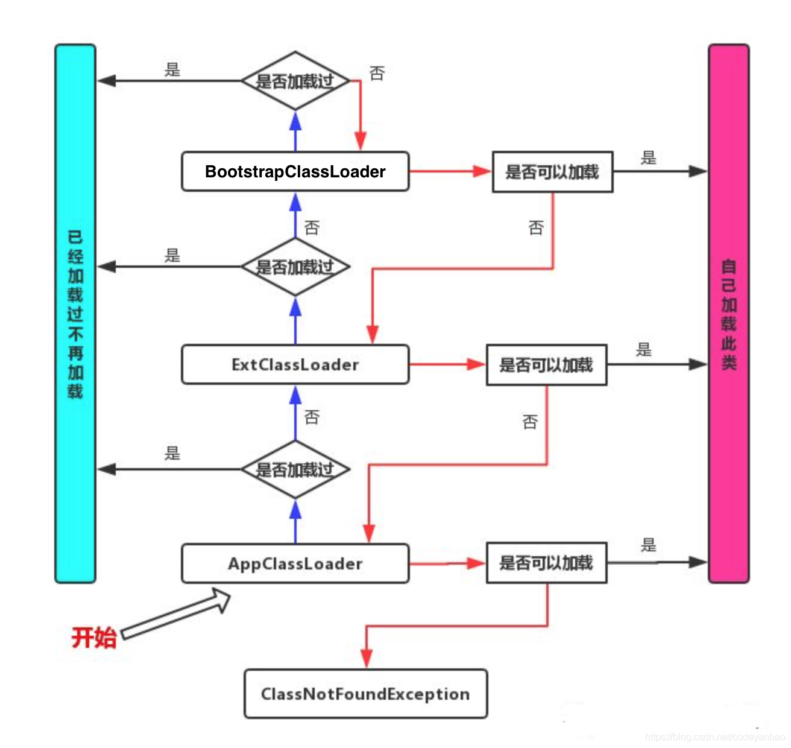

java之反射
java之反射
一直不理解反射是啥，闲暇时间找了翻了下《Java 核心技术》 略微理解了点
习惯了javascript，再去理解java的反射特性十分别扭，Javascript 是个脚本语音，动态语言， 而javas是静态语言，得编译成字节码，虚拟机解析执行，运行时不像JS能够直接通过Object.property 或者Object.method在运行时去修改对象属性、方法等。
但是 ，很多时候为了写出通用性代码，增强某些类、某些方法，特别是第三方框架，这种时候就需要去动态操作java代码
整理网上一些资料重点信息
反射是什么
能够分析类能力的程序称为反射
反射库（reflection library）提供了一个丰富且精巧的工具集，可以用来编写和操纵Java代码
作用：
在运行时分析类的能力
在运行时检查对象被
实现泛型数组操作代码
利用Method对象，调用类的方法
核心围绕Class对象 以及 java.lang.reflect类库 API学习
Class对象
在程序运行期间，Java运行时系统始终为所有对象维护一个运行时类型标识，这个信息会跟踪每个对象所属于类，虚拟机利用运行时类型信息选择要执行的正确方法。
如何获取class对象
1.每个 类都有class属性, 返回就是这个类的Class对象
1 | |
2.每个对象都有getClass()方法, 返回这个类运行时类对象, 即该类的Class对象
1 | |
3.Class.forName(类的全限定名) , 返回类Class对象
1 | |
在启动时 包含main方法的类被加载，它会加载所有需要的类。这些类又要加载其它依赖的类，这样会花费很长时间。所以可以在运行时去调用Class.forName手工加载其他类
如何通过反射创建对象,主要有两种方式：
1 | |
从网上找的图片参考处

加载：类加载过程的一个阶段：通过一个类的完全限定查找此类字节码文件，并利用字节码文件创建一个Class对象
链接：验证字节码的安全性和完整性，准备阶段正式为静态域分配存储空间，注意此时只是分配静态成员变量的存储空间，不包含实例成员变量，如果必要的话，解析这个类创建的对其他类的所有引用。
初始化：类加载最后阶段，若该类具有超类，则对其进行初始化，执行静态初始化器和静态初始化成员变量
双亲委派机制

实际上类最开始是由BootstarpClassLoader进行加载，BootstarpClassLoader用于加载JDK提供的类，而我们自己编写的类实际上是AppClassLoader加载的，只有BootstarpClassLoader都没有加载的类，才会让AppClassLoader来加载，因此我们自己编写的同名包同名类不会被加载
判断类继承关系API
str instanceof String
str.getClass() == String.class
i.getClass().asSubclass(Number.class) // 如果需要判断是否为子类或是接口/抽象类的实现，我们可以使用
asSubClass()方法i.getClass().getSuperclass()
getSuperclass()方法，我们可以获取到父类的Class对象
反射创建对象 返回泛型T，当类默认的构造方法被带参构造覆盖时，会出现InstantiationException异常，因为newInstance()只适用于默认无参构造
Class
反射的时候优先去获取构造器去创建对象 ，newInstance（）只适合无参
Class
clazz = Student.class; Student student = clazz.getConstructor(String.class).newInstance(“what’s up”); Class
clazz = Student.class; Constructor constructor = clazz.getDeclaredConstructor(String.class); constructor.setAccessible(true); //修改访问权限 意味着，反射可以无视权限修饰符访问类的内容
反射非常强大，越权访问